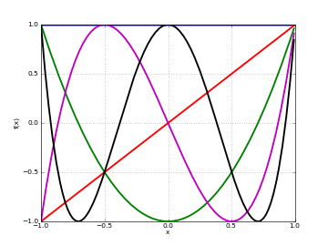
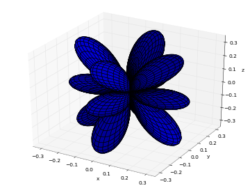

Orthogonal polynomials¶
An orthogonal polynomial sequence is a sequence of polynomials \(P_0(x), P_1(x), \ldots\) of degree \(0, 1, \ldots\), which are mutually orthogonal in the sense that
where \(S\) is some domain (e.g. an interval \([a,b] \in \mathbb{R}\)) and \(w(x)\) is a fixed weight function. A sequence of orthogonal polynomials is determined completely by \(w\), \(S\), and a normalization convention (e.g. \(c_n = 1\)). Applications of orthogonal polynomials include function approximation and solution of differential equations.
Orthogonal polynomials are sometimes defined using the differential equations they satisfy (as functions of \(x\)) or the recurrence relations they satisfy with respect to the order \(n\). Other ways of defining orthogonal polynomials include differentiation formulas and generating functions. The standard orthogonal polynomials can also be represented as hypergeometric series (see Hypergeometric functions), more specifically using the Gauss hypergeometric function \(\,_2F_1\) in most cases. The following functions are generally implemented using hypergeometric functions since this is computationally efficient and easily generalizes.
For more information, see the Wikipedia article on orthogonal polynomials.
Legendre functions¶
legendre()¶
- mpmath.legendre(n, x)¶
legendre(n, x) evaluates the Legendre polynomial \(P_n(x)\). The Legendre polynomials are given by the formula
\[P_n(x) = \frac{1}{2^n n!} \frac{d^n}{dx^n} (x^2 -1)^n.\]Alternatively, they can be computed recursively using
\[P_0(x) = 1\]\[P_1(x) = x\]\[(n+1) P_{n+1}(x) = (2n+1) x P_n(x) - n P_{n-1}(x).\]A third definition is in terms of the hypergeometric function \(\,_2F_1\), whereby they can be generalized to arbitrary \(n\):
\[P_n(x) = \,_2F_1\left(-n, n+1, 1, \frac{1-x}{2}\right)\]Plots
# Legendre polynomials P_n(x) on [-1,1] for n=0,1,2,3,4 f0 = lambda x: legendre(0,x) f1 = lambda x: legendre(1,x) f2 = lambda x: legendre(2,x) f3 = lambda x: legendre(3,x) f4 = lambda x: legendre(4,x) plot([f0,f1,f2,f3,f4],[-1,1])

Basic evaluation
The Legendre polynomials assume fixed values at the points \(x = -1\) and \(x = 1\):
>>> from mpmath import * >>> mp.dps = 15; mp.pretty = True >>> nprint([legendre(n, 1) for n in range(6)]) [1.0, 1.0, 1.0, 1.0, 1.0, 1.0] >>> nprint([legendre(n, -1) for n in range(6)]) [1.0, -1.0, 1.0, -1.0, 1.0, -1.0]
The coefficients of Legendre polynomials can be recovered using degree-\(n\) Taylor expansion:
>>> for n in range(5): ... nprint(chop(taylor(lambda x: legendre(n, x), 0, n))) ... [1.0] [0.0, 1.0] [-0.5, 0.0, 1.5] [0.0, -1.5, 0.0, 2.5] [0.375, 0.0, -3.75, 0.0, 4.375]
The roots of Legendre polynomials are located symmetrically on the interval \([-1, 1]\):
>>> for n in range(5): ... nprint(polyroots(taylor(lambda x: legendre(n, x), 0, n)[::-1])) ... [] [0.0] [-0.57735, 0.57735] [-0.774597, 0.0, 0.774597] [-0.861136, -0.339981, 0.339981, 0.861136]
An example of an evaluation for arbitrary \(n\):
>>> legendre(0.75, 2+4j) (1.94952805264875 + 2.1071073099422j)
Orthogonality
The Legendre polynomials are orthogonal on \([-1, 1]\) with respect to the trivial weight \(w(x) = 1\). That is, \(P_m(x) P_n(x)\) integrates to zero if \(m \ne n\) and to \(2/(2n+1)\) if \(m = n\):
>>> m, n = 3, 4 >>> quad(lambda x: legendre(m,x)*legendre(n,x), [-1, 1]) 0.0 >>> m, n = 4, 4 >>> quad(lambda x: legendre(m,x)*legendre(n,x), [-1, 1]) 0.222222222222222
Differential equation
The Legendre polynomials satisfy the differential equation
\[((1-x^2) y')' + n(n+1) y' = 0.\]We can verify this numerically:
>>> n = 3.6 >>> x = 0.73 >>> P = legendre >>> A = diff(lambda t: (1-t**2)*diff(lambda u: P(n,u), t), x) >>> B = n*(n+1)*P(n,x) >>> nprint(A+B,1) 9.0e-16
legenp()¶
- mpmath.legenp(n, m, z, type=2)¶
Calculates the (associated) Legendre function of the first kind of degree n and order m, \(P_n^m(z)\). Taking \(m = 0\) gives the ordinary Legendre function of the first kind, \(P_n(z)\). The parameters may be complex numbers.
In terms of the Gauss hypergeometric function, the (associated) Legendre function is defined as
\[P_n^m(z) = \frac{1}{\Gamma(1-m)} \frac{(1+z)^{m/2}}{(1-z)^{m/2}} \,_2F_1\left(-n, n+1, 1-m, \frac{1-z}{2}\right).\]With type=3 instead of type=2, the alternative definition
\[\hat{P}_n^m(z) = \frac{1}{\Gamma(1-m)} \frac{(z+1)^{m/2}}{(z-1)^{m/2}} \,_2F_1\left(-n, n+1, 1-m, \frac{1-z}{2}\right).\]is used. These functions correspond respectively to LegendreP[n,m,2,z] and LegendreP[n,m,3,z] in Mathematica.
The general solution of the (associated) Legendre differential equation
\[(1-z^2) f''(z) - 2zf'(z) + \left(n(n+1)-\frac{m^2}{1-z^2}\right)f(z) = 0\]is given by \(C_1 P_n^m(z) + C_2 Q_n^m(z)\) for arbitrary constants \(C_1\), \(C_2\), where \(Q_n^m(z)\) is a Legendre function of the second kind as implemented by legenq().
Examples
Evaluation for arbitrary parameters and arguments:
>>> from mpmath import * >>> mp.dps = 25; mp.pretty = True >>> legenp(2, 0, 10); legendre(2, 10) 149.5 149.5 >>> legenp(-2, 0.5, 2.5) (1.972260393822275434196053 - 1.972260393822275434196053j) >>> legenp(2+3j, 1-j, -0.5+4j) (-3.335677248386698208736542 - 5.663270217461022307645625j) >>> chop(legenp(3, 2, -1.5, type=2)) 28.125 >>> chop(legenp(3, 2, -1.5, type=3)) -28.125
Verifying the associated Legendre differential equation:
>>> n, m = 2, -0.5 >>> C1, C2 = 1, -3 >>> f = lambda z: C1*legenp(n,m,z) + C2*legenq(n,m,z) >>> deq = lambda z: (1-z**2)*diff(f,z,2) - 2*z*diff(f,z) + \ ... (n*(n+1)-m**2/(1-z**2))*f(z) >>> for z in [0, 2, -1.5, 0.5+2j]: ... chop(deq(mpmathify(z))) ... 0.0 0.0 0.0 0.0
legenq()¶
- mpmath.legenq(n, m, z, type=2)¶
Calculates the (associated) Legendre function of the second kind of degree n and order m, \(Q_n^m(z)\). Taking \(m = 0\) gives the ordinary Legendre function of the second kind, \(Q_n(z)\). The parameters may complex numbers.
The Legendre functions of the second kind give a second set of solutions to the (associated) Legendre differential equation. (See legenp().) Unlike the Legendre functions of the first kind, they are not polynomials of \(z\) for integer \(n\), \(m\) but rational or logarithmic functions with poles at \(z = \pm 1\).
There are various ways to define Legendre functions of the second kind, giving rise to different complex structure. A version can be selected using the type keyword argument. The type=2 and type=3 functions are given respectively by
\[Q_n^m(z) = \frac{\pi}{2 \sin(\pi m)} \left( \cos(\pi m) P_n^m(z) - \frac{\Gamma(1+m+n)}{\Gamma(1-m+n)} P_n^{-m}(z)\right)\]\[\hat{Q}_n^m(z) = \frac{\pi}{2 \sin(\pi m)} e^{\pi i m} \left( \hat{P}_n^m(z) - \frac{\Gamma(1+m+n)}{\Gamma(1-m+n)} \hat{P}_n^{-m}(z)\right)\]where \(P\) and \(\hat{P}\) are the type=2 and type=3 Legendre functions of the first kind. The formulas above should be understood as limits when \(m\) is an integer.
These functions correspond to LegendreQ[n,m,2,z] (or LegendreQ[n,m,z]) and LegendreQ[n,m,3,z] in Mathematica. The type=3 function is essentially the same as the function defined in Abramowitz & Stegun (eq. 8.1.3) but with \((z+1)^{m/2}(z-1)^{m/2}\) instead of \((z^2-1)^{m/2}\), giving slightly different branches.
Examples
Evaluation for arbitrary parameters and arguments:
>>> from mpmath import * >>> mp.dps = 25; mp.pretty = True >>> legenq(2, 0, 0.5) -0.8186632680417568557122028 >>> legenq(-1.5, -2, 2.5) (0.6655964618250228714288277 + 0.3937692045497259717762649j) >>> legenq(2-j, 3+4j, -6+5j) (-10001.95256487468541686564 - 6011.691337610097577791134j)
Different versions of the function:
>>> legenq(2, 1, 0.5) 0.7298060598018049369381857 >>> legenq(2, 1, 1.5) (-7.902916572420817192300921 + 0.1998650072605976600724502j) >>> legenq(2, 1, 0.5, type=3) (2.040524284763495081918338 - 0.7298060598018049369381857j) >>> chop(legenq(2, 1, 1.5, type=3)) -0.1998650072605976600724502
Chebyshev polynomials¶
chebyt()¶
- mpmath.chebyt(n, x)¶
chebyt(n, x) evaluates the Chebyshev polynomial of the first kind \(T_n(x)\), defined by the identity
\[T_n(\cos x) = \cos(n x).\]The Chebyshev polynomials of the first kind are a special case of the Jacobi polynomials, and by extension of the hypergeometric function \(\,_2F_1\). They can thus also be evaluated for nonintegral \(n\).
Plots
# Chebyshev polynomials T_n(x) on [-1,1] for n=0,1,2,3,4 f0 = lambda x: chebyt(0,x) f1 = lambda x: chebyt(1,x) f2 = lambda x: chebyt(2,x) f3 = lambda x: chebyt(3,x) f4 = lambda x: chebyt(4,x) plot([f0,f1,f2,f3,f4],[-1,1])
Basic evaluation
The coefficients of the \(n\)-th polynomial can be recovered using using degree-\(n\) Taylor expansion:
>>> from mpmath import * >>> mp.dps = 15; mp.pretty = True >>> for n in range(5): ... nprint(chop(taylor(lambda x: chebyt(n, x), 0, n))) ... [1.0] [0.0, 1.0] [-1.0, 0.0, 2.0] [0.0, -3.0, 0.0, 4.0] [1.0, 0.0, -8.0, 0.0, 8.0]
Orthogonality
The Chebyshev polynomials of the first kind are orthogonal on the interval \([-1, 1]\) with respect to the weight function \(w(x) = 1/\sqrt{1-x^2}\):
>>> f = lambda x: chebyt(m,x)*chebyt(n,x)/sqrt(1-x**2) >>> m, n = 3, 4 >>> nprint(quad(f, [-1, 1]),1) 0.0 >>> m, n = 4, 4 >>> quad(f, [-1, 1]) 1.57079632596448
chebyu()¶
- mpmath.chebyu(n, x)¶
chebyu(n, x) evaluates the Chebyshev polynomial of the second kind \(U_n(x)\), defined by the identity
\[U_n(\cos x) = \frac{\sin((n+1)x)}{\sin(x)}.\]The Chebyshev polynomials of the second kind are a special case of the Jacobi polynomials, and by extension of the hypergeometric function \(\,_2F_1\). They can thus also be evaluated for nonintegral \(n\).
Plots
# Chebyshev polynomials U_n(x) on [-1,1] for n=0,1,2,3,4 f0 = lambda x: chebyu(0,x) f1 = lambda x: chebyu(1,x) f2 = lambda x: chebyu(2,x) f3 = lambda x: chebyu(3,x) f4 = lambda x: chebyu(4,x) plot([f0,f1,f2,f3,f4],[-1,1])

Basic evaluation
The coefficients of the \(n\)-th polynomial can be recovered using using degree-\(n\) Taylor expansion:
>>> from mpmath import * >>> mp.dps = 15; mp.pretty = True >>> for n in range(5): ... nprint(chop(taylor(lambda x: chebyu(n, x), 0, n))) ... [1.0] [0.0, 2.0] [-1.0, 0.0, 4.0] [0.0, -4.0, 0.0, 8.0] [1.0, 0.0, -12.0, 0.0, 16.0]
Orthogonality
The Chebyshev polynomials of the second kind are orthogonal on the interval \([-1, 1]\) with respect to the weight function \(w(x) = \sqrt{1-x^2}\):
>>> f = lambda x: chebyu(m,x)*chebyu(n,x)*sqrt(1-x**2) >>> m, n = 3, 4 >>> quad(f, [-1, 1]) 0.0 >>> m, n = 4, 4 >>> quad(f, [-1, 1]) 1.5707963267949
Jacobi polynomials¶
jacobi()¶
- mpmath.jacobi(n, a, b, z)¶
jacobi(n, a, b, x) evaluates the Jacobi polynomial \(P_n^{(a,b)}(x)\). The Jacobi polynomials are a special case of the hypergeometric function \(\,_2F_1\) given by:
\[P_n^{(a,b)}(x) = {n+a \choose n} \,_2F_1\left(-n,1+a+b+n,a+1,\frac{1-x}{2}\right).\]Note that this definition generalizes to nonintegral values of \(n\). When \(n\) is an integer, the hypergeometric series terminates after a finite number of terms, giving a polynomial in \(x\).
Evaluation of Jacobi polynomials
A special evaluation is \(P_n^{(a,b)}(1) = {n+a \choose n}\):
>>> from mpmath import * >>> mp.dps = 15; mp.pretty = True >>> jacobi(4, 0.5, 0.25, 1) 2.4609375 >>> binomial(4+0.5, 4) 2.4609375
A Jacobi polynomial of degree \(n\) is equal to its Taylor polynomial of degree \(n\). The explicit coefficients of Jacobi polynomials can therefore be recovered easily using taylor():
>>> for n in range(5): ... nprint(taylor(lambda x: jacobi(n,1,2,x), 0, n)) ... [1.0] [-0.5, 2.5] [-0.75, -1.5, 5.25] [0.5, -3.5, -3.5, 10.5] [0.625, 2.5, -11.25, -7.5, 20.625]
For nonintegral \(n\), the Jacobi “polynomial” is no longer a polynomial:
>>> nprint(taylor(lambda x: jacobi(0.5,1,2,x), 0, 4)) [0.309983, 1.84119, -1.26933, 1.26699, -1.34808]
Orthogonality
The Jacobi polynomials are orthogonal on the interval \([-1, 1]\) with respect to the weight function \(w(x) = (1-x)^a (1+x)^b\). That is, \(w(x) P_n^{(a,b)}(x) P_m^{(a,b)}(x)\) integrates to zero if \(m \ne n\) and to a nonzero number if \(m = n\).
The orthogonality is easy to verify using numerical quadrature:
>>> P = jacobi >>> f = lambda x: (1-x)**a * (1+x)**b * P(m,a,b,x) * P(n,a,b,x) >>> a = 2 >>> b = 3 >>> m, n = 3, 4 >>> chop(quad(f, [-1, 1]), 1) 0.0 >>> m, n = 4, 4 >>> quad(f, [-1, 1]) 1.9047619047619
Differential equation
The Jacobi polynomials are solutions of the differential equation
\[(1-x^2) y'' + (b-a-(a+b+2)x) y' + n (n+a+b+1) y = 0.\]We can verify that jacobi() approximately satisfies this equation:
>>> from mpmath import * >>> mp.dps = 15 >>> a = 2.5 >>> b = 4 >>> n = 3 >>> y = lambda x: jacobi(n,a,b,x) >>> x = pi >>> A0 = n*(n+a+b+1)*y(x) >>> A1 = (b-a-(a+b+2)*x)*diff(y,x) >>> A2 = (1-x**2)*diff(y,x,2) >>> nprint(A2 + A1 + A0, 1) 4.0e-12
The difference of order \(10^{-12}\) is as close to zero as it could be at 15-digit working precision, since the terms are large:
>>> A0, A1, A2 (26560.2328981879, -21503.7641037294, -5056.46879445852)
Gegenbauer polynomials¶
gegenbauer()¶
- mpmath.gegenbauer(n, a, z)¶
Evaluates the Gegenbauer polynomial, or ultraspherical polynomial,
\[C_n^{(a)}(z) = {n+2a-1 \choose n} \,_2F_1\left(-n, n+2a; a+\frac{1}{2}; \frac{1}{2}(1-z)\right).\]When \(n\) is a nonnegative integer, this formula gives a polynomial in \(z\) of degree \(n\), but all parameters are permitted to be complex numbers. With \(a = 1/2\), the Gegenbauer polynomial reduces to a Legendre polynomial.
Examples
Evaluation for arbitrary arguments:
>>> from mpmath import * >>> mp.dps = 25; mp.pretty = True >>> gegenbauer(3, 0.5, -10) -2485.0 >>> gegenbauer(1000, 10, 100) 3.012757178975667428359374e+2322 >>> gegenbauer(2+3j, -0.75, -1000j) (-5038991.358609026523401901 + 9414549.285447104177860806j)
Evaluation at negative integer orders:
>>> gegenbauer(-4, 2, 1.75) -1.0 >>> gegenbauer(-4, 3, 1.75) 0.0 >>> gegenbauer(-4, 2j, 1.75) 0.0 >>> gegenbauer(-7, 0.5, 3) 8989.0
The Gegenbauer polynomials solve the differential equation:
>>> n, a = 4.5, 1+2j >>> f = lambda z: gegenbauer(n, a, z) >>> for z in [0, 0.75, -0.5j]: ... chop((1-z**2)*diff(f,z,2) - (2*a+1)*z*diff(f,z) + n*(n+2*a)*f(z)) ... 0.0 0.0 0.0
The Gegenbauer polynomials have generating function \((1-2zt+t^2)^{-a}\):
>>> a, z = 2.5, 1 >>> taylor(lambda t: (1-2*z*t+t**2)**(-a), 0, 3) [1.0, 5.0, 15.0, 35.0] >>> [gegenbauer(n,a,z) for n in range(4)] [1.0, 5.0, 15.0, 35.0]
The Gegenbauer polynomials are orthogonal on \([-1, 1]\) with respect to the weight \((1-z^2)^{a-\frac{1}{2}}\):
>>> a, n, m = 2.5, 4, 5 >>> Cn = lambda z: gegenbauer(n, a, z, zeroprec=1000) >>> Cm = lambda z: gegenbauer(m, a, z, zeroprec=1000) >>> chop(quad(lambda z: Cn(z)*Cm(z)*(1-z**2)*(a-0.5), [-1, 1])) 0.0
Hermite polynomials¶
hermite()¶
- mpmath.hermite(n, z)¶
Evaluates the Hermite polynomial \(H_n(z)\), which may be defined using the recurrence
\[H_0(z) = 1\]\[H_1(z) = 2z\]\[H_{n+1} = 2z H_n(z) - 2n H_{n-1}(z).\]The Hermite polynomials are orthogonal on \((-\infty, \infty)\) with respect to the weight \(e^{-z^2}\). More generally, allowing arbitrary complex values of \(n\), the Hermite function \(H_n(z)\) is defined as
\[H_n(z) = (2z)^n \,_2F_0\left(-\frac{n}{2}, \frac{1-n}{2}, -\frac{1}{z^2}\right)\]for \(\Re{z} > 0\), or generally
\[H_n(z) = 2^n \sqrt{\pi} \left( \frac{1}{\Gamma\left(\frac{1-n}{2}\right)} \,_1F_1\left(-\frac{n}{2}, \frac{1}{2}, z^2\right) - \frac{2z}{\Gamma\left(-\frac{n}{2}\right)} \,_1F_1\left(\frac{1-n}{2}, \frac{3}{2}, z^2\right) \right).\]Plots
# Hermite polynomials H_n(x) on the real line for n=0,1,2,3,4 f0 = lambda x: hermite(0,x) f1 = lambda x: hermite(1,x) f2 = lambda x: hermite(2,x) f3 = lambda x: hermite(3,x) f4 = lambda x: hermite(4,x) plot([f0,f1,f2,f3,f4],[-2,2],[-25,25])

Examples
Evaluation for arbitrary arguments:
>>> from mpmath import * >>> mp.dps = 25; mp.pretty = True >>> hermite(0, 10) 1.0 >>> hermite(1, 10); hermite(2, 10) 20.0 398.0 >>> hermite(10000, 2) 4.950440066552087387515653e+19334 >>> hermite(3, -10**8) -7999999999999998800000000.0 >>> hermite(-3, -10**8) 1.675159751729877682920301e+4342944819032534 >>> hermite(2+3j, -1+2j) (-0.07652130602993513389421901 - 0.1084662449961914580276007j)
Coefficients of the first few Hermite polynomials are:
>>> for n in range(7): ... chop(taylor(lambda z: hermite(n, z), 0, n)) ... [1.0] [0.0, 2.0] [-2.0, 0.0, 4.0] [0.0, -12.0, 0.0, 8.0] [12.0, 0.0, -48.0, 0.0, 16.0] [0.0, 120.0, 0.0, -160.0, 0.0, 32.0] [-120.0, 0.0, 720.0, 0.0, -480.0, 0.0, 64.0]
Values at \(z = 0\):
>>> for n in range(-5, 9): ... hermite(n, 0) ... 0.02769459142039868792653387 0.08333333333333333333333333 0.2215567313631895034122709 0.5 0.8862269254527580136490837 1.0 0.0 -2.0 0.0 12.0 0.0 -120.0 0.0 1680.0
Hermite functions satisfy the differential equation:
>>> n = 4 >>> f = lambda z: hermite(n, z) >>> z = 1.5 >>> chop(diff(f,z,2) - 2*z*diff(f,z) + 2*n*f(z)) 0.0
Verifying orthogonality:
>>> chop(quad(lambda t: hermite(2,t)*hermite(4,t)*exp(-t**2), [-inf,inf])) 0.0
Laguerre polynomials¶
laguerre()¶
- mpmath.laguerre(n, a, z)¶
Gives the generalized (associated) Laguerre polynomial, defined by
\[L_n^a(z) = \frac{\Gamma(n+b+1)}{\Gamma(b+1) \Gamma(n+1)} \,_1F_1(-n, a+1, z).\]With \(a = 0\) and \(n\) a nonnegative integer, this reduces to an ordinary Laguerre polynomial, the sequence of which begins \(L_0(z) = 1, L_1(z) = 1-z, L_2(z) = z^2-2z+1, \ldots\).
The Laguerre polynomials are orthogonal with respect to the weight \(z^a e^{-z}\) on \([0, \infty)\).
Plots
# Hermite polynomials L_n(x) on the real line for n=0,1,2,3,4 f0 = lambda x: laguerre(0,0,x) f1 = lambda x: laguerre(1,0,x) f2 = lambda x: laguerre(2,0,x) f3 = lambda x: laguerre(3,0,x) f4 = lambda x: laguerre(4,0,x) plot([f0,f1,f2,f3,f4],[0,10],[-10,10])

Examples
Evaluation for arbitrary arguments:
>>> from mpmath import * >>> mp.dps = 25; mp.pretty = True >>> laguerre(5, 0, 0.25) 0.03726399739583333333333333 >>> laguerre(1+j, 0.5, 2+3j) (4.474921610704496808379097 - 11.02058050372068958069241j) >>> laguerre(2, 0, 10000) 49980001.0 >>> laguerre(2.5, 0, 10000) -9.327764910194842158583189e+4328
The first few Laguerre polynomials, normalized to have integer coefficients:
>>> for n in range(7): ... chop(taylor(lambda z: fac(n)*laguerre(n, 0, z), 0, n)) ... [1.0] [1.0, -1.0] [2.0, -4.0, 1.0] [6.0, -18.0, 9.0, -1.0] [24.0, -96.0, 72.0, -16.0, 1.0] [120.0, -600.0, 600.0, -200.0, 25.0, -1.0] [720.0, -4320.0, 5400.0, -2400.0, 450.0, -36.0, 1.0]
Verifying orthogonality:
>>> Lm = lambda t: laguerre(m,a,t) >>> Ln = lambda t: laguerre(n,a,t) >>> a, n, m = 2.5, 2, 3 >>> chop(quad(lambda t: exp(-t)*t**a*Lm(t)*Ln(t), [0,inf])) 0.0
Spherical harmonics¶
spherharm()¶
- mpmath.spherharm(l, m, theta, phi)¶
Evaluates the spherical harmonic \(Y_l^m(\theta,\phi)\),
\[Y_l^m(\theta,\phi) = \sqrt{\frac{2l+1}{4\pi}\frac{(l-m)!}{(l+m)!}} P_l^m(\cos \theta) e^{i m \phi}\]where \(P_l^m\) is an associated Legendre function (see legenp()).
Here \(\theta \in [0, \pi]\) denotes the polar coordinate (ranging from the north pole to the south pole) and \(\phi \in [0, 2 \pi]\) denotes the azimuthal coordinate on a sphere. Care should be used since many different conventions for spherical coordinate variables are used.
Usually spherical harmonics are considered for \(l \in \mathbb{N}\), \(m \in \mathbb{Z}\), \(|m| \le l\). More generally, \(l,m,\theta,\phi\) are permitted to be complex numbers.
Note
spherharm() returns a complex number, even the value is purely real.
Plots
# Real part of spherical harmonic Y_(4,0)(theta,phi) def Y(l,m): def g(theta,phi): R = abs(fp.re(fp.spherharm(l,m,theta,phi))) x = R*fp.cos(phi)*fp.sin(theta) y = R*fp.sin(phi)*fp.sin(theta) z = R*fp.cos(theta) return [x,y,z] return g fp.splot(Y(4,0), [0,fp.pi], [0,2*fp.pi], points=300) # fp.splot(Y(4,0), [0,fp.pi], [0,2*fp.pi], points=300) # fp.splot(Y(4,1), [0,fp.pi], [0,2*fp.pi], points=300) # fp.splot(Y(4,2), [0,fp.pi], [0,2*fp.pi], points=300) # fp.splot(Y(4,3), [0,fp.pi], [0,2*fp.pi], points=300)
\(Y_{4,0}\):

\(Y_{4,1}\):

\(Y_{4,2}\):
\(Y_{4,3}\):

\(Y_{4,4}\):

Examples
Some low-order spherical harmonics with reference values:
>>> from mpmath import * >>> mp.dps = 25; mp.pretty = True >>> theta = pi/4 >>> phi = pi/3 >>> spherharm(0,0,theta,phi); 0.5*sqrt(1/pi)*expj(0) (0.2820947917738781434740397 + 0.0j) (0.2820947917738781434740397 + 0.0j) >>> spherharm(1,-1,theta,phi); 0.5*sqrt(3/(2*pi))*expj(-phi)*sin(theta) (0.1221506279757299803965962 - 0.2115710938304086076055298j) (0.1221506279757299803965962 - 0.2115710938304086076055298j) >>> spherharm(1,0,theta,phi); 0.5*sqrt(3/pi)*cos(theta)*expj(0) (0.3454941494713354792652446 + 0.0j) (0.3454941494713354792652446 + 0.0j) >>> spherharm(1,1,theta,phi); -0.5*sqrt(3/(2*pi))*expj(phi)*sin(theta) (-0.1221506279757299803965962 - 0.2115710938304086076055298j) (-0.1221506279757299803965962 - 0.2115710938304086076055298j)
With the normalization convention used, the spherical harmonics are orthonormal on the unit sphere:
>>> sphere = [0,pi], [0,2*pi] >>> dS = lambda t,p: fp.sin(t) # differential element >>> Y1 = lambda t,p: fp.spherharm(l1,m1,t,p) >>> Y2 = lambda t,p: fp.conj(fp.spherharm(l2,m2,t,p)) >>> l1 = l2 = 3; m1 = m2 = 2 >>> print(fp.quad(lambda t,p: Y1(t,p)*Y2(t,p)*dS(t,p), *sphere)) (1+0j) >>> m2 = 1 # m1 != m2 >>> print(fp.chop(fp.quad(lambda t,p: Y1(t,p)*Y2(t,p)*dS(t,p), *sphere))) 0.0
Evaluation is accurate for large orders:
>>> spherharm(1000,750,0.5,0.25) (3.776445785304252879026585e-102 - 5.82441278771834794493484e-102j)
Evaluation works with complex parameter values:
>>> spherharm(1+j, 2j, 2+3j, -0.5j) (64.44922331113759992154992 + 1981.693919841408089681743j)

Table Of Contents
Previous topic
Bessel functions and related functions